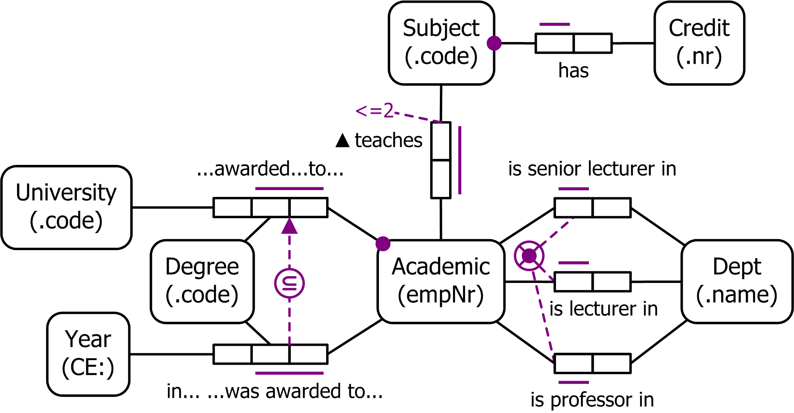

This section provides a basic overview of Object Role Modeling (ORM), through white papers, articles and a slide presentation. The relationship between ORM and the Entity Relationship (ER) approach is also discussed. To view a PDF file you may need to install an additional piece of software called Adobe Acrobat Reader from the Adobe site.
For an in-depth treatment of ORM, see Halpin, T. & Morgan T. 2008, Information
Modeling and Relational Databases, Second Edition, published by Morgan Kaufmann Publishers (ISBN: 978-0-12-373568-3).
Details on this book are available on the
Resources page.
Object-Role Modeling version 2 (ORM 2)
pdf file (123K)
Halpin, T. 2009, ‘Object-Role modeling’, Encyclopedia of Database Systems, Editors-in-chief: Liu, Ling; Özsu, M. Tamer, Springer, 2009. (print and online)
This entry on Object-Role Modeling will soon be published in the Encyclopedia of Database Systems by Springer. The Encyclopedia, under the editorial guidance of Ling Liu and M. Tamer Özsu, will be a multiple volume, comprehensive, and authoritative reference on databases, data management, and database systems. Since it will be available in both print and online formats, researchers, students, and practitioners will benefit from advanced search functionality and convenient interlinking possibilities with related online content. The Encyclopedia’s online version will be accessible on the SpringerLink platform.
ORM 2
pdf file (165K)
Halpin, T. 2005, ‘ORM 2’, On the Move to Meaningful Internet Systems 2005: OTM 2005 Workshops, eds R. Meersman, Z. Tari, P. Herrero et al., Cyprus. Springer LNCS 3762, pp 676-87.
Object-role Modeling (ORM) is a fact-oriented modeling approach for specifying, transforming, and querying information at a conceptual level. Unlike Entity-Relationship modeling and Unified Modeling Language class diagrams, fact-oriented modeling is attribute-free, treating all elementary facts as relationships. For information modeling, fact-oriented graphical notations are typically far more expressive than other notations. Introduced 30 years ago, ORM has evolved into closely related dialects, and is supported by industrial and academic tools. Industrial experience has identified ways to improve cur-rent ORM languages (graphical and textual) and associated tools. A project is now under way to provide tool support for a second generation ORM (called ORM 2), that has significant advances over current ORM technology. This paper provides an overview of, and motivation for, the enhancements introduced by ORM 2, and discusses an open-source ORM 2 tool under development.
Object Role Modeling: An Overview pdf file (405K)
This white paper provides an overview of Object Role Modeling (ORM), using a case study to illustrate the main ideas. The steps used to design a conceptual schema for an information system are first explained in some detail. To help communicate the ideas, some mistakes are deliberately made. Checking procedures within the design method are later used to remove these errors. A simple example is included to show how the conceptual design may be "optimized" for relational database systems by applying a transformation. An algorithm for mapping this design to a normalized, relational database schema is then outlined. Finally, the paper gives a brief sketch of how ORM can be used as a sound basis for conceptual queries, object oriented modeling, and process/event modeling.
Microsoft has also published a Revised version of the above ORM overview.
Object Role Modeling (ORM/NIAM)
pdf file (125K)
Halpin, T. 1998, ‘Object-Role Modeling (ORM/NIAM)’, Handbook on Architectures of Information Systems, Springer, Heidelberg, Ch. 4.
Object Role Modeling (ORM) is a method for modeling and querying an
information system at the conceptual level, and mapping between conceptual
and logical (e.g. relational) levels. ORM comes in various flavors,
including NIAM (Natural language Information Analysis Method). This
article provides an overview of ORM, and notes its advantages over entity
relationship and traditional object oriented modeling.
This paper and
the Object Role Modeling Overview paper overlap substantially; however,
the historical details, symbol summary, and references provide additional
material.
Business Rules and Object Role Modeling
pdf file (407K)
Halpin, T. 1996, ‘Business rules and Object-Role modeling’, Database Programming and Design, vol. 9, no. 10 (Oct. 1996), pp. 66-72.
This article provides a gentle introduction to Object Role Modeling (ORM), explaining its advantages over entity relationship and object oriented approaches for capturing and validating business rules with subject matter experts. The ORM attribute-free, mixfix predicate approach simplifies verbalization, multiple instantiation and schema evolution, and its rich constraint language enables many rules to be captured graphically and easily validated. The article includes simple examples to illustrate these advantages.
Entity Relationship modeling from an ORM perspective:
Part 1
pdf file (80K)
Halpin, T. 1999, ‘Entity relationship modeling from an ORM perspective: Part 1’, Journal of Conceptual
Modeling, no. 11, www.inconcept.com.
This paper is the first in a series of articles examining data modeling in the Entity relationship (ER) approach from the perspective of Object Role Modeing (ORM). After a brief historical introduction, this article examines basic aspects of the Barker notation for ER.
Entity Relationship modeling from an ORM perspective:
Part 2
pdf file (58K)
Halpin, T. 2000, ‘Entity relationship modeling from an ORM perspective: Part 2’, Journal of Conceptual Modeling, no. 12, www.inconcept.com.
This is the second in a series of articles examining data modeling in the Entity relationship (ER) approach from the perspective of Object Role Modeing (ORM). This paper completes a basic review of the Barker notation for ER.
Entity Relationship modeling from an ORM perspective:
Part 3
pdf file (55K)
Halpin, T. 2000, ‘Entity relationship modeling from an ORM perspective: Part 3’, Journal of Conceptual Modeling, no. 13, www.inconcept.com.
This is the third in a series of articles examining data modeling in the Entity relationship (ER) approach from the perspective of Object Role Modeing (ORM). This paper discusses the Information Engineering (IE) notation for ER.
Modeling business rules using fact-orientation and
object-orientation
This PowerPoint presentation was
delivered at the Business Rules Conference hosted by the Data Resource Management
Association in May, 1999. The original DRMA99.pps file (926kb) has
been zipped for downloading (still a hefty 798kb), and needs to be
unzipped (e.g. using Winzip) before it can be viewed.
DRMA99 slide presentation (798k)
ORM Home ORM in Detail Modeling Issues
Conceptual Queries UML and ORM Resources
All diagrams on this site were created with Microsoft Visio.